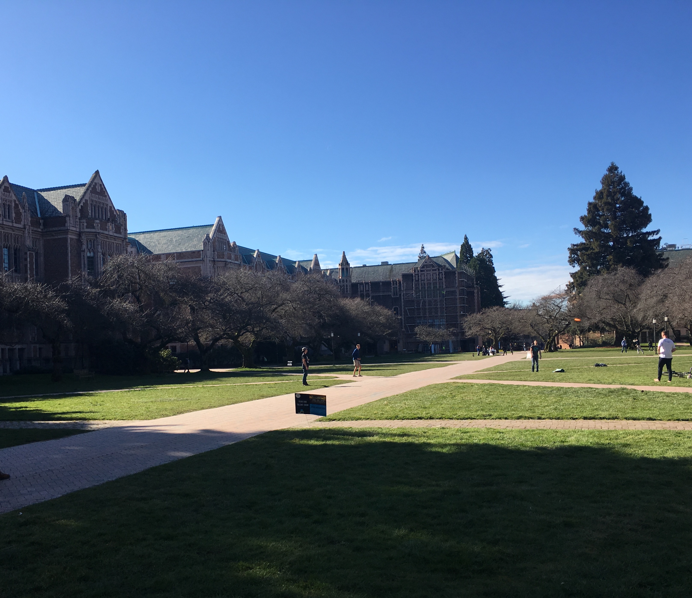

留学先はワシントン大学
アメリカ西海岸、シアトルにあるワシントン大学に留学してました。ワシントンと聞くと東にある首都のD.C.と思いがちですが、ワシントン大学は西のワシントン州にある名門州立大学になります。イメージカラーは紫で、「W」の文字が象徴になっています。
Homestay in Seattle
アメリカ西海岸、シアトルにあるワシントン大学に留学してました。ワシントンと聞くと東にある首都のD.C.と思いがちですが、ワシントン大学は西のワシントン州にある名門州立大学になります。イメージカラーは紫で、「W」の文字が象徴になっています。
これは３月のお昼の風景です。写真のような広場がキャンパス内にあり、フリスビーで遊んだりペニーと呼ばれる小さいスケボーで遊んだりしている学生が多くいます。 写っている建物は大学の校舎で、大学とは思えないどこかのお城のような綺麗さでした。
ハリー・○ッターの世界！？というのが最初の感想でした。天井も高く、かえって集中できないのではと思いましたが、座ってみるととても静かで集中力が高まる空間でした。ワシントン大学にはいろんな国からの留学生がたくさんいて、その留学生たちと図書館でちょっとした会話ができるのは魅力のうちの一つです。